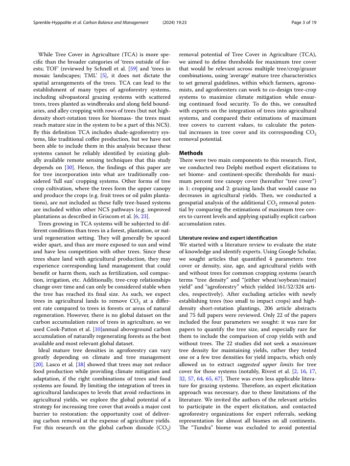
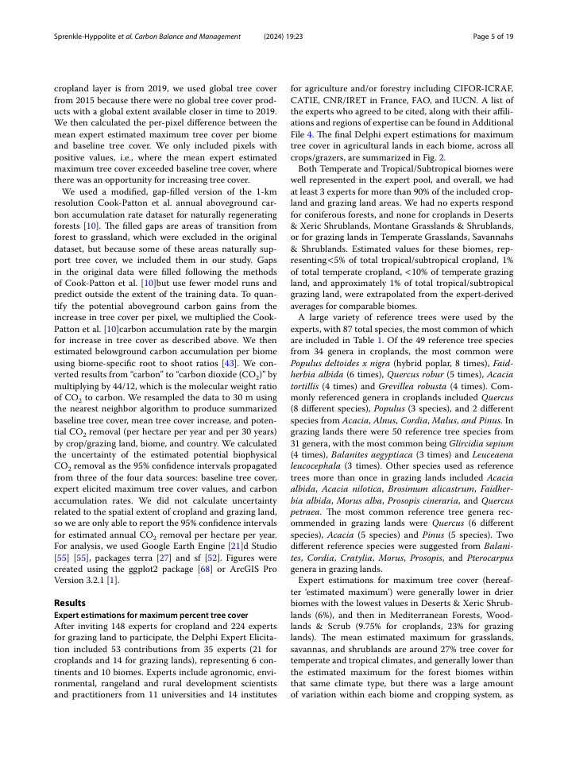
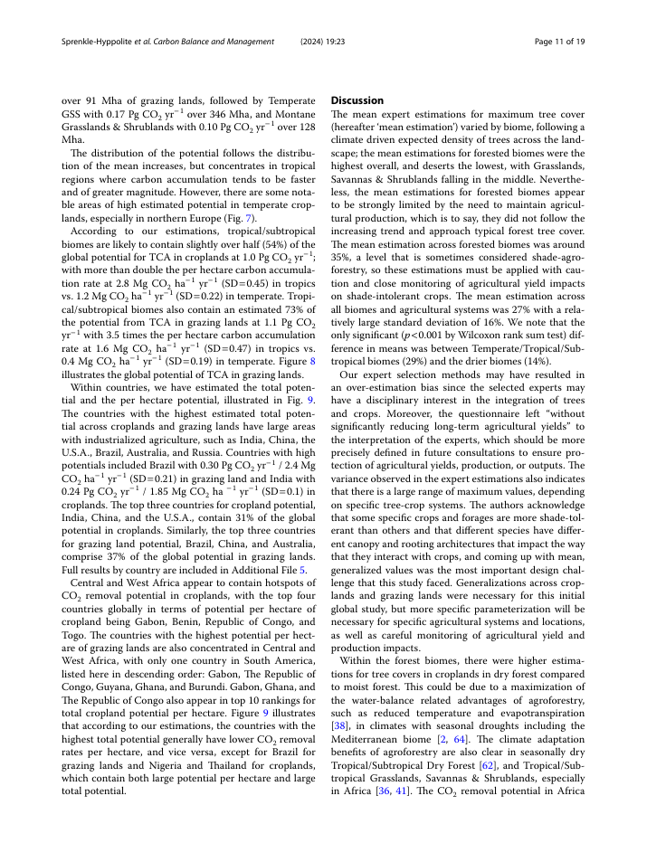
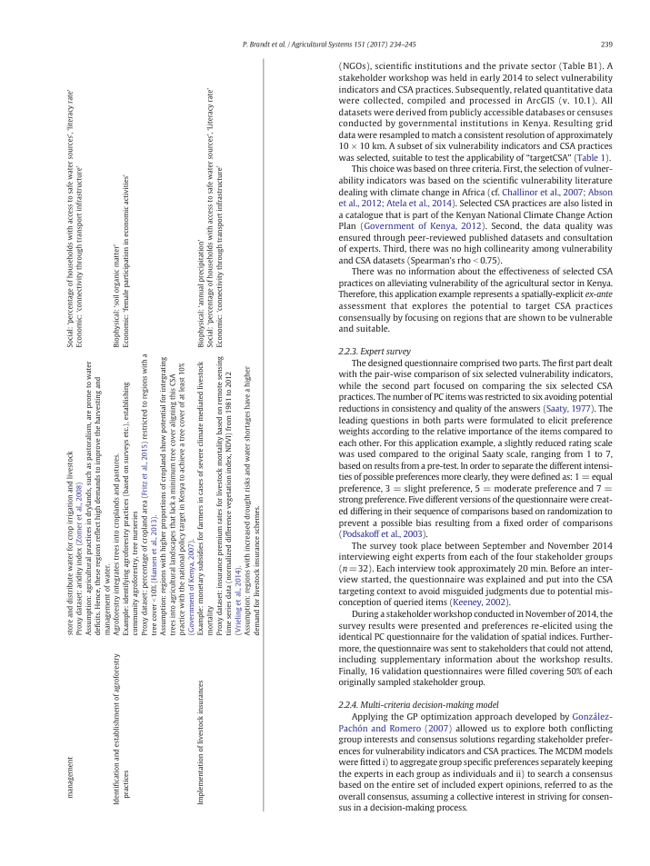
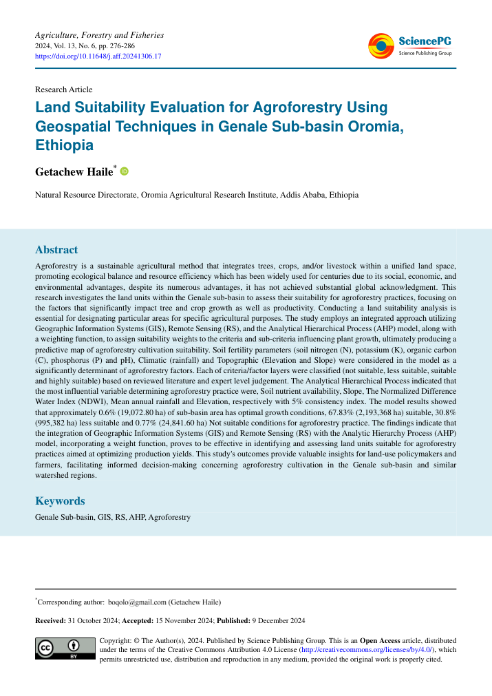
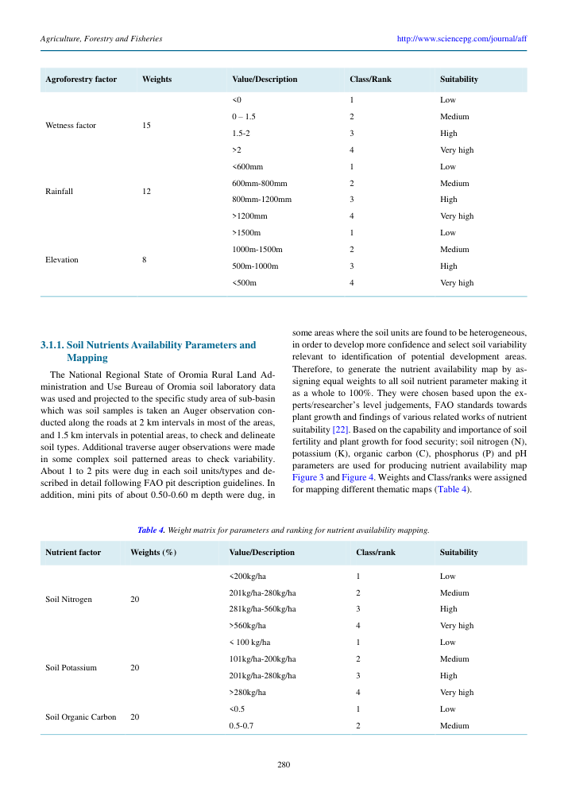
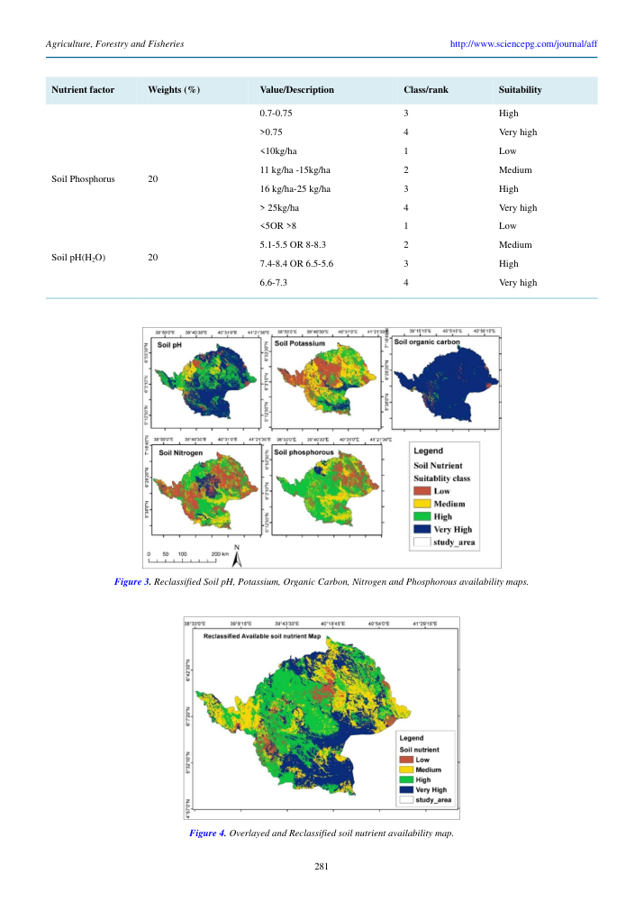

19 October 2026 · Review branch · Follow-up applied: Sprenkle approved for synthesis with other sources; Brandt excluded; Haile remains held.
Full audit · Record decisions in existing review batch
Your note is supported: this study estimates maximum tree cover compatible with maintaining agricultural yields. The pooled 27% (SD 16%) covers both cropping and grazing systems. It cannot be used as a cropland-only universal ceiling.
Recommended action: Approved by Pete for combination with other sources; keep the pooled value out of executable generic T4. Develop biome × farming-system canopy headroom using the source’s disaggregated values.
Methods pp3–4; spatial calculation p5; pooled result p11. Existing >25% exclusion is an accounting boundary, not a biological limit.
ev_tree_canopy_cover_sprenkle24_2 · Current human decision: approved; combine with other sources



This source explicitly targets Kenyan cropland below 10% existing tree cover to align with a national policy target. Areas above 10% are not thereby unsuitable for agroforestry.
Recommended action: Pete rejected inclusion; this record is now soft-deleted. Do not restore a generic ≤10% suitability mask. Any future Kenya targeting scenario requires explicit scope and policy-date validation.
Table 1, PDF p6 (printed p239). The paper’s targeting assumption directly names the policy rationale.
ev_t4_tcc_brandt2015_1 · Current human decision: rejected; soft-deleted

Haile gives pH an equal 20% share within five nutrient indicators (N, P, K, organic carbon and pH); this is not an empirical response coefficient. Its cited Ahmad–Goparaju Dumka precedent uses three pH ranks, with 6.6–7.3 highest. Haile expands this into four classes with overlapping alkaline intervals. The abstract and methods describe a nutrient-availability component of agroforestry land suitability in the Genale sub-basin. Policy relevance is an intended use, not the basis of the pH classes. However pH 8.2 falls in Low (>8), Medium (8–8.3), and High (7.4–8.4). The High class also prints a reversed interval (6.5–5.6).
Recommended action: Keep held for table ambiguity. Retain the record and exact classes; do not infer corrected bounds or reuse 6.6–7.3 as a global optimum. Resolution requires a verified correction or independent, applicable evidence.
Abstract p1; nutrient methodology and Table 4 heading p5; pH row p6.
ev_T4_ph_haile2024_1 · Current human decision: hold



Use a context-specific canopy target to estimate room to add trees: max(0, target − observed cover). Output is percentage points, not suitability probability or plantable area.
Illustration only: values below are hypothetical, not extracted recommendations.
Headroom:
Next implementation requires source-verified biome × system targets, observed cropland/grazing gates, matching canopy definitions and uncertainty. Missing target stays unknown. Zero headroom means no expansion under that scenario; it does not establish agroforestry infeasibility. No runtime rule enabled.
33 active class/rank records remain visible in the audit. Advance records only when class bounds, rank direction, dataset codes and family/context applicability are unambiguous. A normalized 0–1 score is a methodological convention and needs an explicit decision; source ordinal ranks alone do not supply it. Haile pH fails the first step.